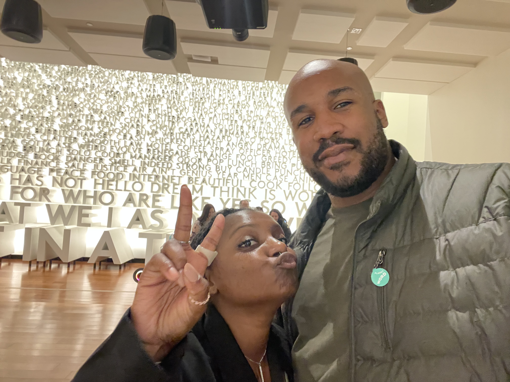

Jonathan Smith

5027 winding Bluf Dr, Unit 206, Raleigh North Carolina 27613
T:984-298-9456 E: Jonathan.a.smith9@gmail.com
Summary
Highly moviated IT professional with 12 years of comprehensive experience in the
United States Army's information technology sector and an Associates degree in
Cybersecurity. Newly focused on web developement with a solid understanding of
front-end and back-end technologies, as well as a
passion for Website design , User experience design
and User Interface design across multiple platforms and technologies.
Equipped with a diverse and promising skill-set, proficent in an assortment of
technologies, including HTML5 , CSS3 , Javascript and
Python.
Education
American Military University (Concentration: Cybersecurity)
(2018 - Present)
Successfully completed comprehensive and rigorous Associate degree in Cybersecurity
at AMU, with coursework spanning from network security, digital forensics to
cryptography. Gained hands-on experience with Cybersecurity tools and simulations,
with an emphasis on securing and defending networks and information systems. The program
also highlighted the ethical, legal, and social implications of Cybersecurity, providing
a well-rounded education in the field.
Projects
Personal Portfolio Website/Front End developer
- Developed a Personal Portfolio website to showcase web developmnet
projects and skills.
- Utilized HTML5 , CSS3 , and Javascript to design
and develop the front end of the
website, ensuring a user-friendly Interface
and responsive design.
- Implemented SEO principles to optimize page performance and
visibility.
Work experience
Information technology Specialist
- Led numerous IT projects with a focus on enhancing user experience,
improving website load times, and implementing responsive deisgn principles
, indirectly facilitating my trasnsition to web developement.
- Played a crucial role in system installations, configurations, and
troubleshooting, mirroring the problem-solving skills required in web
development.
- Assisted in the creation of and updating of network secuirty policies
, indicating an understanding of key security principles that are
essential in web developement
Skills
- Programming languages: HTML5, CSSS3, Javascript, Python
- Frameworks/Libraries: React.js, Node.js, Express.js, Bootstrap
- Databases: MySQL, MongoDB
- Version Control: Git, GitHub
- Tools:Visual Studio Code, Postman, Chrome DevTools
- Operating Systems: Windows, Linux
- Cybersecurity: Network Security, cryptography, Firewall Management
Hobbies